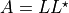

Linear Algebra¶
Functions¶
GSL Shell gives access to some functions of linear algebra based on GSL itself or on the BLAS routines.
- matrix.inv(m)¶
Returns the inverse of the matrix m.
- matrix.det(m)¶
This function computes the determinant of a matrix m from its LU decomposition, LU. The determinant is computed as the product of the diagonal elements of U and the sign of the row permutation signum.
- matrix.solve(A, b)¶
Solve the square system A x = b where A is a square matrix, b is a column matrix. It returns the solution x of the system.
- matrix.svd(m)¶
A general rectangular M-by-N matrix A has a singular value decomposition (SVD) into the product of an M-by-N orthogonal matrix U, an N-by-N diagonal matrix of singular values S and the transpose of an N-by-N orthogonal square matrix V,
The singular values σi = Σii are all non-negative and are generally chosen to form a non-increasing sequence σ1 >= σ2 >= … >= σN >= 0.
The singular value decomposition of a matrix has many practical uses. The condition number of the matrix is given by the ratio of the largest singular value to the smallest singular value. The presence of a zero singular value indicates that the matrix is singular. The number of non-zero singular values indicates the rank of the matrix. In practice singular value decomposition of a rank-deficient matrix will not produce exact zeroes for singular values, due to finite numerical precision. Small singular values should be edited by choosing a suitable tolerance.
For a rank-deficient matrix, the null space of A is given by the columns of V corresponding to the zero singular values. Similarly, the range of A is given by columns of U corresponding to the non-zero singular values.
Note that the routines here compute the “thin” version of the SVD with U as M-by-N orthogonal matrix. This allows in-place computation and is the most commonly-used form in practice. Mathematically, the “full” SVD is defined with U as an M-by-M orthogonal matrix and S as an M-by-N diagonal matrix (with additional rows of zeros).
This function returns three values, in the order, U, Σ, V. So you can write something like this:
u, s, v = svd(m)
- matrix.lu(m)¶
These functions factorize the square matrix A into the LU decomposition PA = LU.
Optionally you can use extract to get L and U seperately:
L,U = matrix.lu(m)
- matrix.qr(m)¶
This function factorizes the M-by-N matrix A into the QR decomposition A = Q R:
Q,R = matrix.qr(m)
- matrix.cholesky(m)¶
A symmetric, positive definite square matrix A has a Cholesky decomposition into a product of a lower triangular matrix L and its transpose L^T,
real: complex: 
This is sometimes referred to as taking the square-root of a matrix. The Cholesky decomposition can only be carried out when all the eigenvalues of the matrix are positive. This decomposition can be used to convert the linear system A x = b into a pair of triangular systems (L y = b, L^T x = y), which can be solved by forward and back-substitution.
These functions factorize the symmetric, positive-definite square matrix A into the Cholesky decomposition. On input, the values from the diagonal and lower-triangular part of the matrix A are used (the upper triangular part is ignored). If the matrix is not positive-definite then the decomposition will fail.
- matrix.td_decomp(m)¶
A matrix A can be factorized by similarity transformations into the form,
real: complex:
where
real: Q is an orthogonal matrix and T is a symmetric tridiagonal matrix. complex: U is a unitary matrix and T is a real symmetric tridiagonal matrix.
This function calculates this decomposition and returns Q/U, the diagonal vector and the sub-diagonal vector.
- matrix.hessenberg_decomp(m)¶
A general real matrix A can be decomposed by orthogonal similarity transformations into the form
where U is orthogonal and H is an upper Hessenberg matrix, meaning that it has zeros below the first subdiagonal. The Hessenberg reduction is the first step in the Schur decomposition for the nonsymmetric eigenvalue problem, but has applications in other areas as well. The function returns
HandU.
- matrix.hesstri_decomp(a, b)¶
A general real matrix pair (A, B) can be decomposed by orthogonal similarity transformations into the form
A = U H V^T B = U R V^T
where U and V are orthogonal, H is an upper Hessenberg matrix, and R is upper triangular. The Hessenberg-Triangular reduction is the first step in the generalized Schur decomposition for the generalized eigenvalue problem. The function returns H, R, U and V.